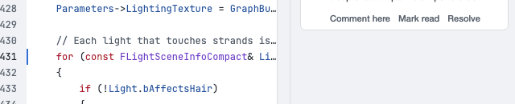
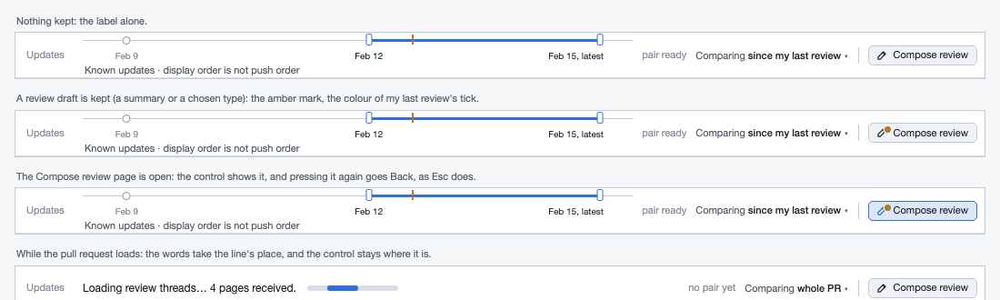
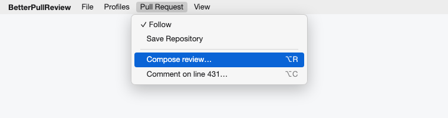
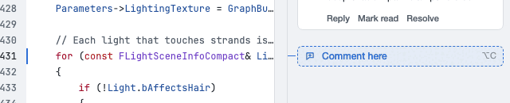
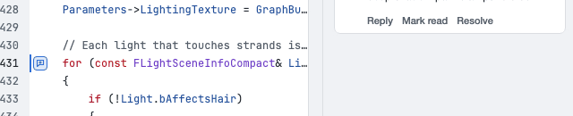

Where Compose review and Draft comment or reply belong
You chose to settle this in its own session rather than pick one of v1's five placements. This round starts from what each entry does in the product today, then draws four placements over the rows the product builds. That means the 50-pixel Updates line with its history caption and the comparison's own status line. v1 drew the accepted asset's 34-pixel line, so its comparison heights ran about 39 pixels high.
Let's discuss this outside of the attended review flow, give me a handoff prompt to tackle this properly in a separate session thread.The owner, on candidate BPR-1106-placement-v001, session 70834742, decision ece7a6f3
What each entry does today
Traced in workbench_window.cpp, the two editors, the workflow and the mutation contract at d90aee6e. Both are buttons on a bare row that cc038748 added for RFC-BPR-0037.
| Compose review | Draft comment or reply | |
|---|---|---|
| Opens | The Compose review page in place of the centre. The drawers hide; the strip and the Updates line stay. | The inline draft page in place of the centre. |
| Acts on | The whole pull request: a review type (Comment, Approve, Request changes) and a summary. | One line: the draft the app has bound to the current diff line. |
| Sends | Nothing. On the page, Submit review posts the summary and the verdict, and nothing else. | Nothing. On the page, Publish posts one comment, or one reply, on its own. |
| The only way to | Submit, approve or request changes. | Open a comment from the keyboard. |
| Other ways in | None. No menu item, no shortcut. | Mouse only: a thread card's Comment here, a draft's Edit, the Discuss feed's Reply, an AI finding's conversion. |
| Keyboard | A Tab stop after the Updates line and Comparing, then Space. | The next Tab stop. |
| A reviewer reaches for it | Once a pass, at the end: the verdict and the summary. Or straight away, for a quick Approve from Overview. | Every time a line deserves a remark: many times a pass, right after landing on the line. |
| Where it shows | Every modality and both compose pages; never on Home. | The same, including Overview and Discuss. There it has no line, so it opens an empty, read-only page. |

What makes a place right
- A command lives where its object is. Compose review acts on the pull request. A comment acts on a line, and a reply acts on a thread.
- Frequency sets the reach. A command used many times a pass needs a key and a place beside the line. The decisive one needs a fixed, labelled place that says whether a review draft is kept.
- The comparison's height is the budget (BPR-0246). The row takes 22 pixels on macOS and 20 elsewhere, in every modality.
- The Windows strip has no width to give. Its controls sum to exactly 902 pixels at the 902 floor.
- No row should come and go. While a pull request opens, the readiness line (26 pixels) and the entry row stack above the Updates line. The window jumps when you leave Overview.
- Every command belongs in a menu, which costs nothing. The Pull Request menu is on all three platforms: the macOS menu bar, the Windows ≡ menu and the Linux menu row. It holds only Follow and Save Repository.
v1's five, challenged
- A
- The row as built. 22 or 20 pixels in every mode for two buttons on an otherwise empty row. It sits flush against the window's edge while the Updates line starts 12 pixels in, and Tab reaches it after the Updates line although it sits above it. It is the labelled toolbar RFC-BPR-0028 set out to remove.
- B
- The review menu. It hides the only way to finish a review behind a check mark named Private progress, beside receipts that never leave this machine. The specification asks for review submission in a persistent place.
- C
- Both at the Updates line's end. The right place for Compose review and the wrong one for a comment, which is about a line far below. On the product's line it costs 299 pixels of track on macOS (312 on Windows). At the 900-pixel floor that leaves 282 pixels of line.
- D
- The drawer's foot. The conversations drawer isn't shown in Overview or Discuss at all, and its foot already holds the defect verdict buttons.
- E
- A strip control. 59 pixels the Windows strip doesn't have at 902. Any other yield changes a strip the owner has accepted twice.
- And for all five, v1 put the keys and the draft state out of scope. They decide as much as the placement does. The loading line's move into the Updates line was credited to C alone, but any placement can take it.
Four placements, drawn
One window and one pull request; any two frames differ only in the placement. ← and → step through the options. The stack beside the frame is drawn to scale from the frame's own measurements.
Costs, measured on the frames
| Athe row, as built | Cboth at the line's end | Fsplit by job, proposed | Hsplit, status bar | |
|---|---|---|---|---|
| Comparison at 1280×852, macOS | 707 (830‰) | 729 (856‰) | 729 (856‰) | 729 (856‰) |
| Comparison at 1280×852, Windows | 712 (836‰) | 732 (859‰) | 732 (859‰) | 732 (859‰) |
| Comparison at 1920×1080, macOS and Windows | 935 and 940 | 957 and 960 | 957 and 960 | 957 and 960 |
| Rows over the Updates line while a pull request opens | 48 on macOS, 46 on Windows | none | none | none |
| Windows strip at its 902 floor | +0 | +0 | +0 | +0 |
| Updates line's track at 1280, macOS | 961 | 662 | 819 | 961 |
| The same at the width floor, macOS and Windows | 581 and 571 | 282 and 259 | 439 and 425 | 581 and 571 |
| Compose review | 1 click, above the line | 1 click, the line's end | 1 click, the line's end; ⌥R | 1 click, bottom right; ⌥R |
| Comment on the current line | 1 click, far from the line | 1 click, far from the line | 1 click beside the line; ⌥C | 1 click beside the line; ⌥C |
| Reply beside the code | not possible | not possible | Reply on the card; ⌥C | Reply on the card; ⌥C |
| A kept review draft shows | no | no | the amber mark | the amber mark |
| Compose review seen without looking for it | always | always | always, top right | rarely: the status bar |
Heights and track widths come from the frames' own layout, read back from each rendered page. The keys, the menu items and the loading words are not tied to F: any placement can take them. They are drawn with F and H because those are the options that need them. The Windows strip total is BPR-0653's measurement of the product.
Recommendation: F, split by job
Compose review moves to the Updates line's right end. It keeps its label and gains a mark when a review draft is kept, in the amber of my last review's tick. While the Compose review page is open the control shows as pressed, and pressing it again goes back, as Esc does. The Updates line already holds the comparison between updates, and my review is the next thing that happens to them. GitHub puts its Review changes button in the same place: the right end of the toolbar that starts with the commit range.
Commenting and replying move to where the line and the thread are. The current line, when it has no thread, gets a Comment here slot in the comments column beside it, drawn like a card and aligned like one. Thread cards beside the code offer Reply, as the accepted Read asset draws them, instead of Comment here. The label "Draft comment or reply" goes: each place now names what it does.
Both go in the Pull Request menu with keys. ⌥R (Alt+R) composes the review. ⌥C (Alt+C) comments on the current line, or replies to the selected thread in Discuss, and the menu item names which. Both keys are free and follow ⌥N, Next new comment. The whole loop stays on the keyboard: ⌥PgDn to the change, ⌥C, type, Publish, Esc.
The loading words move into the Updates line's track, where the product already says "Loading review history…", so no row comes or goes above it.
What F costs
- Two places to learn instead of one row. The menu lists both with their keys, and Comment here appears where the eye already is.
- Comment here needs the comments column. With the drawer hidden, ⌥C and the menu remain, or the gutter mark (a toggle above) works without the drawer.
- 142 pixels of the Updates line's track on macOS, 146 on Windows: half of C's. 439 pixels of line are left at the 900 floor.
- It is more than a move. Building it needs a slot in the cards view, Reply on the cards beside the code, a kept-draft projection from the review workflow, two window-owned actions and an Esc binding. That is two cards, not one.
- The Updates line mixes what I'm comparing with what I'm saying. The divider and the pen keep them apart, and the order matches GitHub's.
The decisions I'm asking for
- Split the entries by job, or keep them together?Proposed: split (F or H). Together means A or C.
- Where does Compose review live?Proposed: the Updates line's right end (F). The alternative is the status bar's end (H).
- Where does Comment here live?Proposed: the comments column beside the line. The alternative is a mark in the code gutter.
- Should any row come and go above the Updates line?Proposed: no. The loading words go into the line's track.
- The keys.Proposed: ⌥R Compose review, ⌥C Comment here or Reply, Esc back from either page.




If F is chosen
The owner decision is recorded on BPR-1106, which then closes. The implementation is carded in two slices, plus a third if question 4 is answered as proposed. Nothing product-side changes before the cards exist.
- Compose review at the Updates line's end. The composition entry row goes. The Updates line gains a trailing place for the window's own
composeReviewAction, and the review workflow's kept-draft state is projected to its mark. The Pull Request menu gains both commands with Alt+R and Alt+C, and Esc goes back from either page. BPR-0940's allow-list returns to "the Updates line is the first row under the strip" and the focus order moves. The UIforETW floors rise to the stacks without the row: Linux 862, macOS 857, and Windows measured on bpr-main-win.github_application.cpp's digests are resealed. - Comment here and Reply at their context. The cards view gains the slot at the current line, and cards beside the code offer Reply, starting a reply through the path the Discuss feed already uses.
- The loading words in the line. The readiness line's words take the Updates line's track while there is nothing to draw. The comparison and Overview states it reports afterwards move to where each is shown.
RFC-BPR-0028 AC-01 and its chrome paragraph are amended again, to the arrangement the owner picks:
AC-01 The chrome above the comparison is the strip and the epoch line, in that order, with no scroll area and no separate title bar, at every window size the workbench supports; the strip is the row the window controls sit in. Compose review sits at the epoch line's right end; commenting and replying sit beside the line and the thread they act on (owner decision, 2026-09-24, BPR-1106).
How the frames were made
The frames file draws one window from the accepted RFC-BPR-0028 surface's tokens, with the rows the product builds above and inside the comparison. Those are the 30-pixel strip, the 50-pixel Updates line with its caption and pair summary, the comparison's 15-pixel status line (14 on Windows) and its 6 pixels of spacing, no path bar, and a 22-pixel status bar (20 on Windows). The drawers and cards follow the accepted asset.
Headless Chrome (--headless=new --screenshot) rendered 70 frames at exactly their window size, device scale 1. That covers four placements at 1280×852 and 1920×1080 in both appearances and on both platforms, three at each platform's width floor, and loading, Discuss, the Compose page, the menus and the control's states. Each frame was reduced to 256 colours and looked at. The measurements were read back from each page's own layout at the same viewport.
This Mac has no Segoe UI, so the Windows frames use the Mac's type, which is wider. To keep the strip's own content in view at 1280, they take the compact modality labels, which the product takes below 1100. Their widths are indicative, and the Windows floor figures above are BPR-0653's measurements of the product.